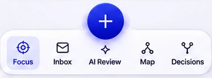
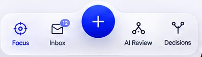
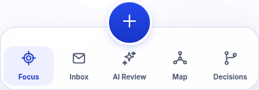
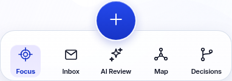

Reference → previous actual application → corrected actual application
Focus selected in every actual-app capture. Width-normalized UI-only crops; original native proportions retained.

Approved five-destination composition
Latest approved glass treatment
Actual application before correction
Actual application after correction